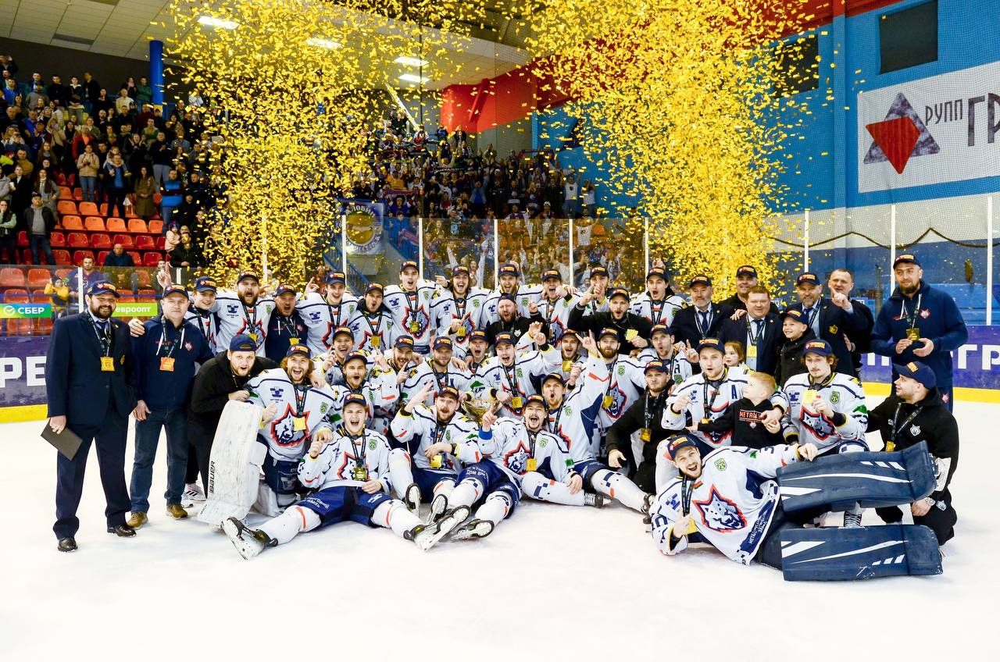

Хоккейный клуб
Хоккейный клуб «Металлург-Жлобин» — главная хоккейная команда города, выступающая в белорусской экстралиге. Домашней ареной клуба является Ледовый дворец «Металлург», вмещающий более 2000 зрителей. Арена была открыта в 2006 году и с тех пор стала центром хоккейной жизни Жлобинщины.
«Металлург» — пятикратный чемпион Беларуси (2012, 2022, 2023, 2024, 2026) и обладатель Кубка Беларуси (2011). Команда регулярно участвует в розыгрышах Континентального кубка, а её воспитанники выступают в сильнейших лигах Европы и Северной Америки.
Детско-юношеская школа «Металлурга» по праву считается одной из самых продуктивных в стране. Здесь начинали свой путь:
В 2026 году Ледовый дворец пережил серьёзное обновление: площадку перестроили в «канадском формате» (60 × 26 метров), что сделало игру ещё более динамичной и зрелищной.
«Металлург» — это не просто команда, это гордость Жлобина и символ спортивных традиций города.